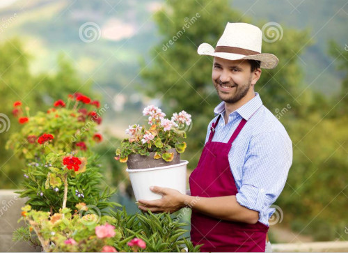

Welcome
To the official website for the Kentucky Botanical Society.
Who are we?
A coalition of those wishing to persue greater knowledge of, and to share their love of, plants.
We are Kentucky's #1 botanical society. Originally founded in the early 60's, by Collin Flower, as a small plant nursery club. We soon found traction not just locally, but from all across Kentucky.
While we are now much larger, we still keep kindled our deep love of plants. 
What do we do?
If it involes or relates to plants, chances are we participate, at least to some extent, in it.
From food crops to flowers, we engage in all plants. Whether it's giving seminars on the which fetilizers to use for which plant, hosting local educational fieldtrips, hosting fairs, or studying rare plants, we do a little of everything. To see upcoming events, please visit our events page.